In this hw I implemented essential computer graphics techniques and algorithms to draw convincing (and maybe not convincing) images given the limitations and constraints of a 2D display
Task 1: Drawing Single-Color Triangles
In order to rasterize a triangle you must build three planes that are lower-bounded by a respective line of the triangle in order to build an intersecting area where we can identify if the middle of a pixel is in the bounds of the triangle sides. In my work I make sure that the triangle vectors come in counter-clockwise winding order by swapping two vectors if they are clockwise. My implementation is also exactly that of checking each sample within the bounding box of the triangle. I iterate from the minimum x and y values of the vertices to the maximum x and y values of the vertices.
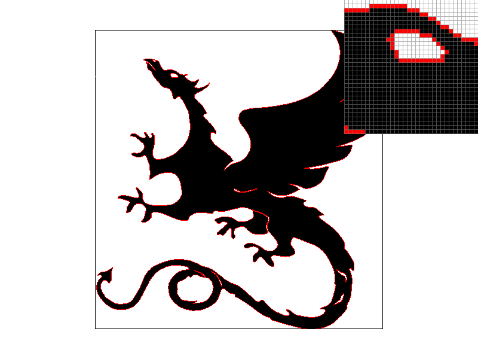
basic/test3
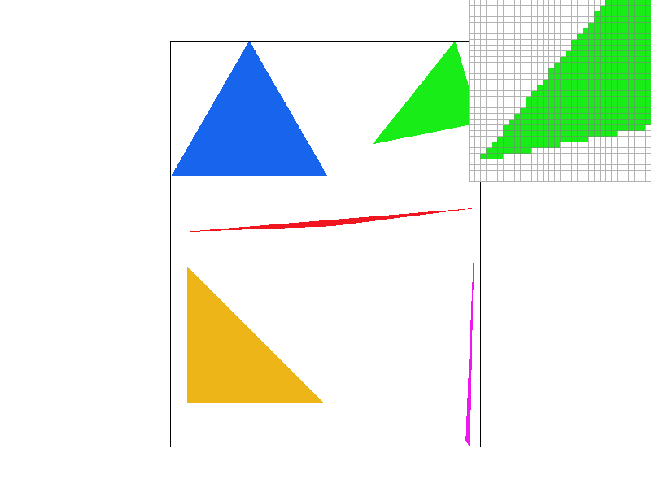
basic/test4
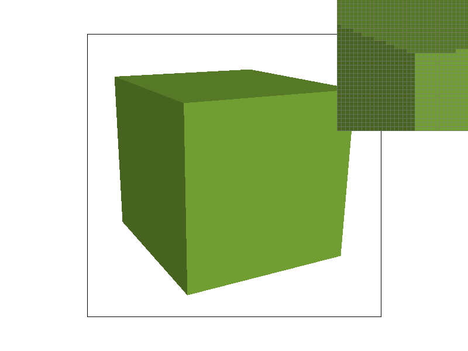
basic/test5
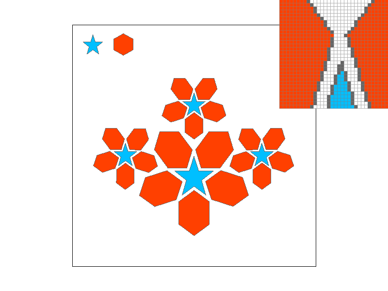
basic/test6
Task 2: Antialiasing by Supersampling
My supersampling algorithm works by subdividing each pixel into a sqrt(sample_rate) * sqrt(sample_rate) sized grid and checking if each subpixel lies within a given triangle. fill_pixel func is edited in order to handle these subpixels given that the sample_buffer is a 1d flattened array which increases in size with an increase in sample_rate accordingly. I modified set_sample_rate and set_framebuffer_target in order to allocate memory dynamically given sample_rate. And finally in resolve_to_framebuffer at the end of the process pipeline, I check and average the colors of all supersamples from within a pixel, making edges appear blurry and reducing jaggies! Sumpersampling is useful because of this reason, it reduces jaggies.
Supersampling rate at 1 pixel
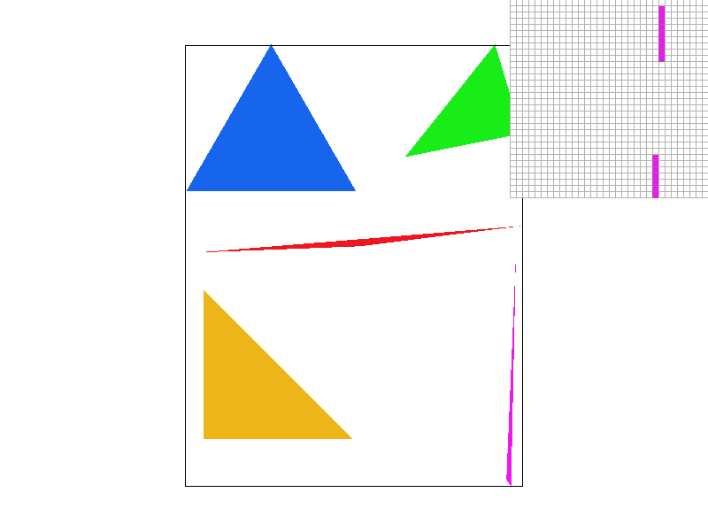
Supersampling rate at 1 pixel
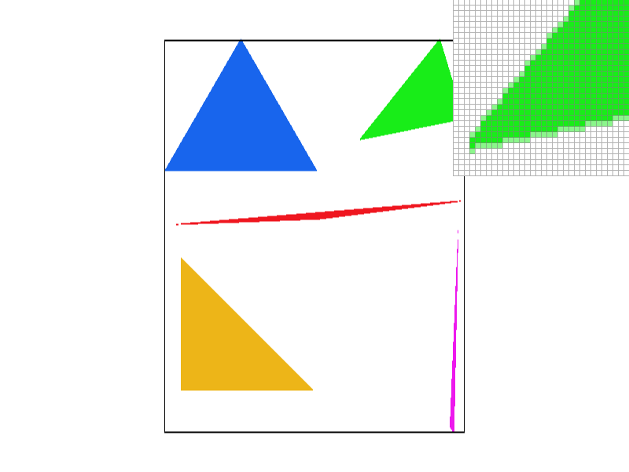
Supersampling rate at 4 pixels
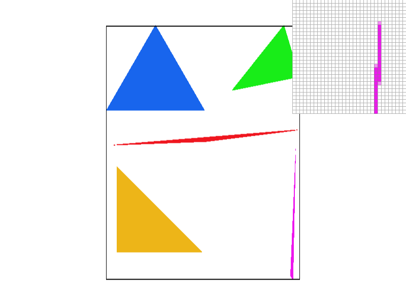
Supersampling rate at 4 pixels
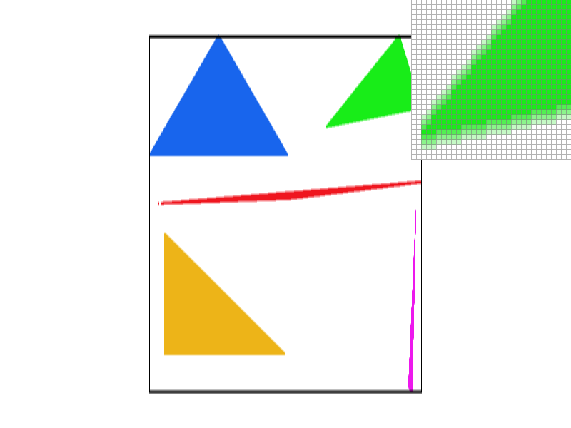
Supersampling rate at 16 pixels
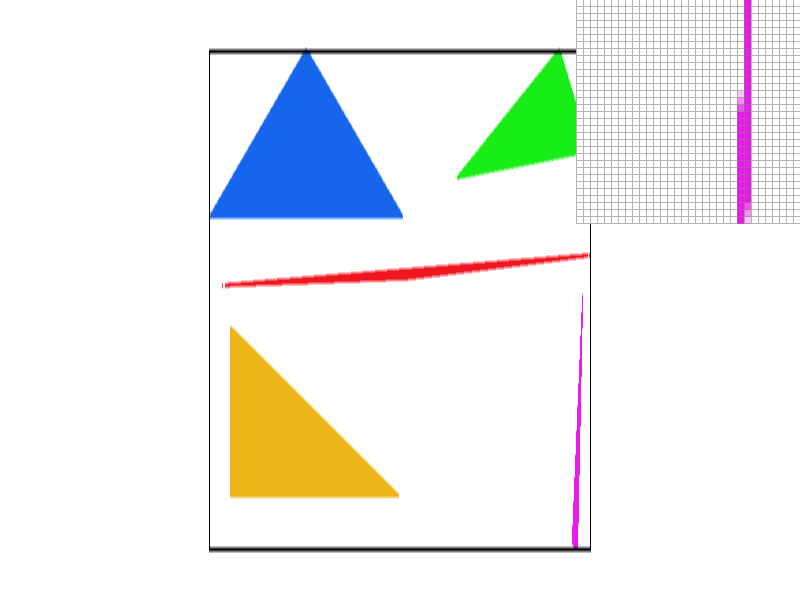
Supersampling rate at 16 pixels
Task 3: Transforms
For this task I tried to make cubeman run! Using mostly rotations and translations I was able to get cubeman to resemble a running stickman.
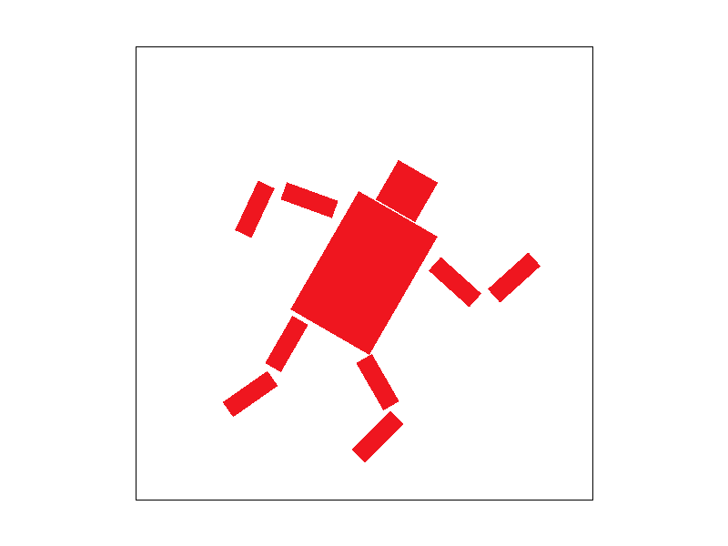
My transformed robot
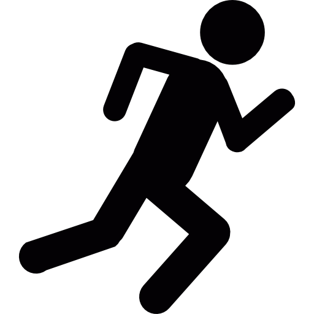
Running stickman reference image
Task 4: Barycentric coordinates
Barycentric coordinates work by taking the colors of triangle vertices and weighing each vertex color's intensity in accordance to a single pixel's distance from each vertex inside the triangle. This creates a gradient effect that is very noticable if we create a triangle with red (255 0 0) green (0 255 0) and blue (0 0 255) vertices.
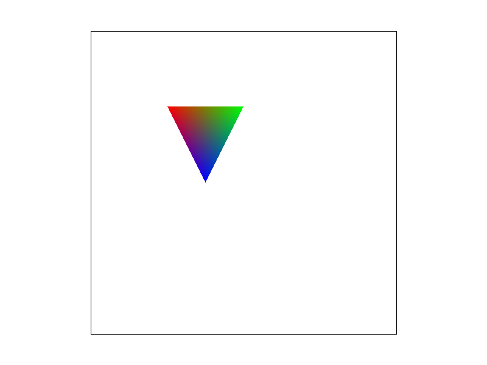
Triangle demonstration
basic/test7
Task 5: "Pixel sampling" for texture mapping
Pixel sampling is useful for texture mapping since it allows for texture maps in 2D to be applied and translated into 3D models, sampling color. In the Nearest algorithm a pixel color value is assigned to that of the nearest pixel's color. In the Bilinear algorithm a weighted average of the 4 nearest pixels is taken instead.
Nearest SS rate at 1 pixel
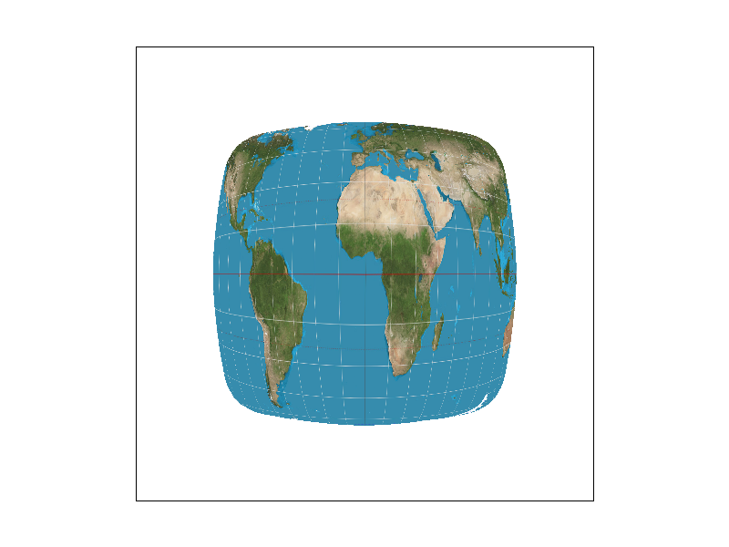
Bilinear SS rate at 1 pixel
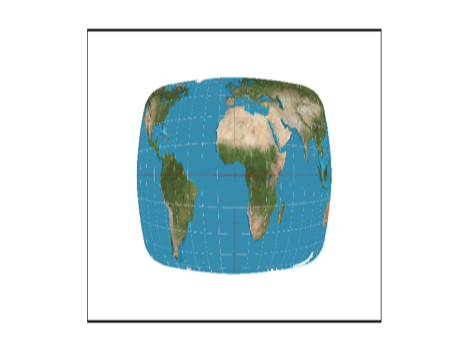
Nearest SS rate at 16 pixels
Bilinear SS rate at 16 pixels
Longitude and Latitude lines appear more broken up and jaggy when using Nearest sampling compared to Bilinear sampling. Bilinear will produce a much larger difference in image quality when used in a 3D environment.
Task 6: "Level Sampling" with mipmaps for texture mapping
Level sampling involves a scaling of texture-resolutions to achieve a varying Levels of Detail. When computing for the nearest mipmap level we get level from the maximum tex gradient. When computing bilinear mipmap level we do the same, but average of one sample from each of the adjacent mipmap levels.